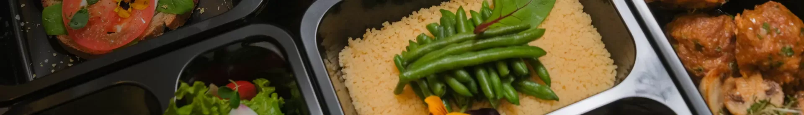
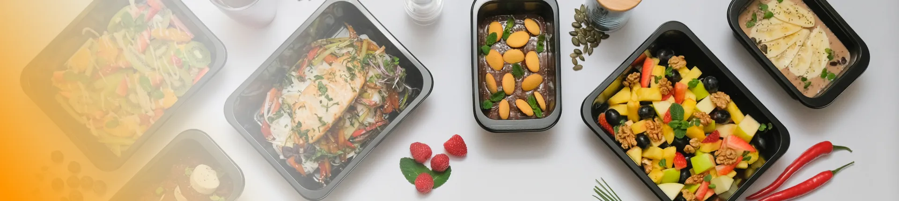

O nás
Na základe dlhoročných skúseností sme vytvorili koncept krabičkovej stravy na mieru, ktorá uľahčí dosiahnutie cieľov a spestrí vaše stravovanie.
Príbeh TopStravy
Ako vznikla myšlienka krabičkovej revolúcie
Predstavte si, že sa každý deň venujete ľuďom, pomáhate im zlepšiť kondíciu vo fitness centre a cítite ich nadšenie. No zároveň sledujete, ako sa im vo výsledkoch často nedarí naplno pretaviť svoje snaženie do vytúženého cieľa.
Peter Benko, tréner s vášňou pre zdravý životný štýl, si všimol jednu zásadnú vec — ľudia strácajú nadšenie pre cvičenie a pohyb práve kvôli nesprávnemu stravovaniu.

Hlavná prekážka
Nie tréning. Strava.
Osobné skúsenosti
Peter strávil nespočetné hodiny cvičením so svojimi klientmi, rozprával sa s nimi o ich cieľoch, výzvach a prekážkach.
Častý problém
Klienti nevedeli, čo je pre nich dobré, ako správne kombinovať jedlá alebo jednoducho nemali čas variť.
Neúspešné pokusy
Aj keď sa im podarilo pár dní udržať v stravovacom režime, vždy sa vrátili k starým návykom.

Vznik TOPSTRAVA
Chutne, zdravo a pravidelne
Myšlienka, ktorá zmenila nielen Petrov pohľad na zdravé stravovanie, ale aj tisícok ďalších. Jednoduché a efektívne riešenie pre ľudí, ktorí chcú zdravo jesť bez komplikácií.
Prečo práve krabičky?
Tím TOPSTRAVA chcel vytvoriť riešenie dostupné pre každého, bez ohľadu na časové možnosti či kulinárske schopnosti. Snažili sme sa priniesť zdravé jedlo priamo k ľuďom — či už do práce, domov alebo po tréningu.
Krabičky sa stali symbolom praktického riešenia: žiadne nákupy, varenie, ani výhovorky. Len kvalitná, chutná a zdravá strava.
Naša vášeň, váš úspech
Pridajte sa k nám
Objavte, aké ľahké je žiť zdravo, chutne a bez kompromisov.
„Schudla som 12 kg a konečne neriešim, čo budem variť. Chuťovo je to úplne inde, než som čakala.“
„Pracujem na zmeny a nikdy som nestíhal jesť poriadne. Teraz mám celý deň vyriešený dopredu.“
„Naberám svalovú hmotu a Max energy mi presne sadol. Oceňujem, že si viem vyradiť potraviny, ktoré nejem.“

Rozvoz
Chcete vedieť, kam rozvážame naše krabičky?
Overte si, či rozvážame aj k vám — chutné krabičky doručíme priamo až domov.
- Skontrolujte dostupnosť vo vašej oblasti
- Pravidelný rozvoz až k vašim dverám
- Čerstvé krabičky pripravené na mieru